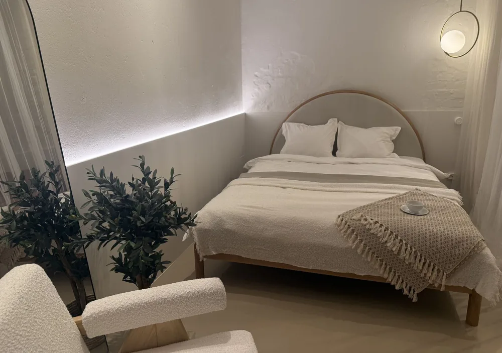
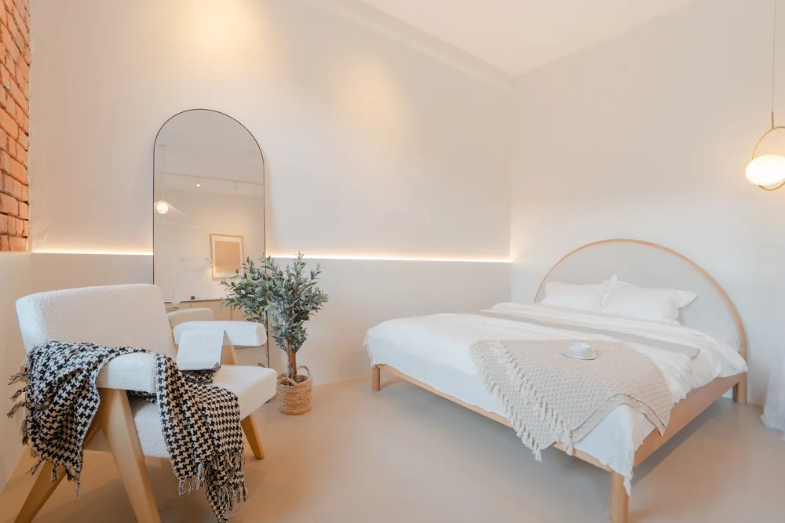
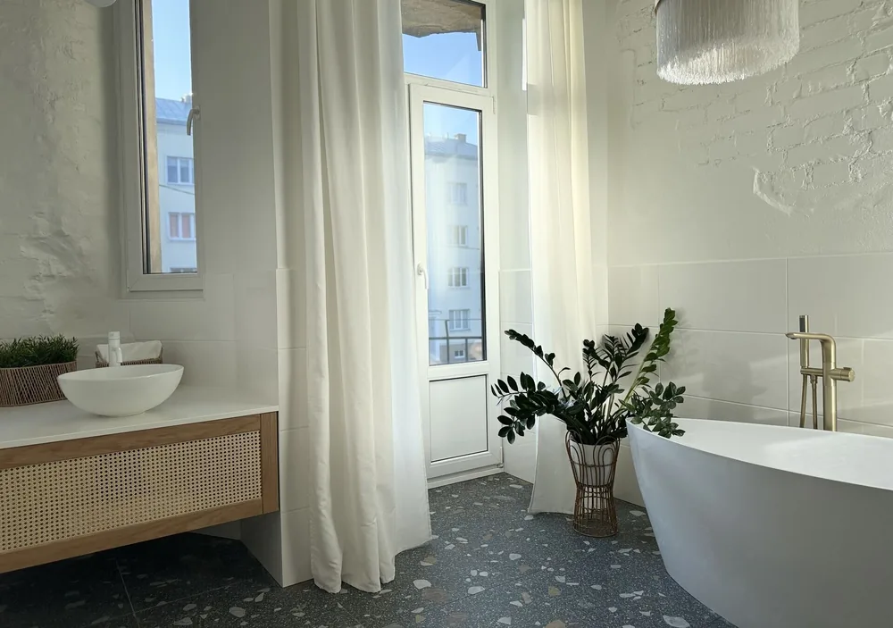
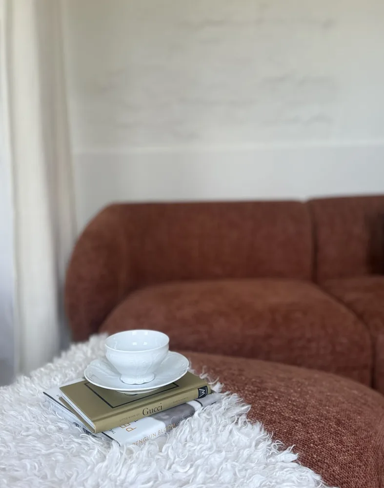
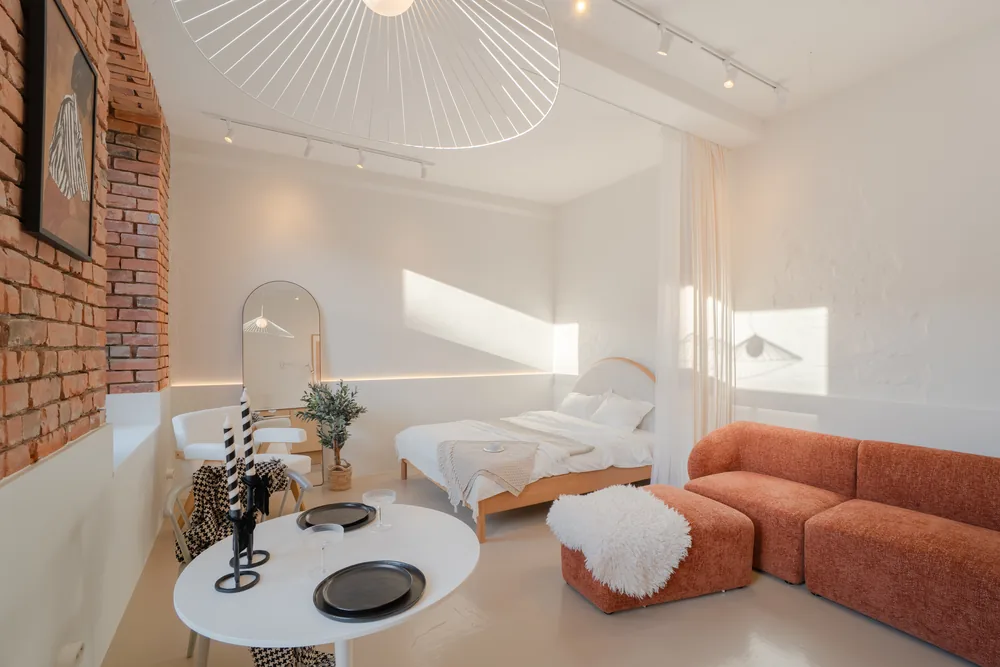
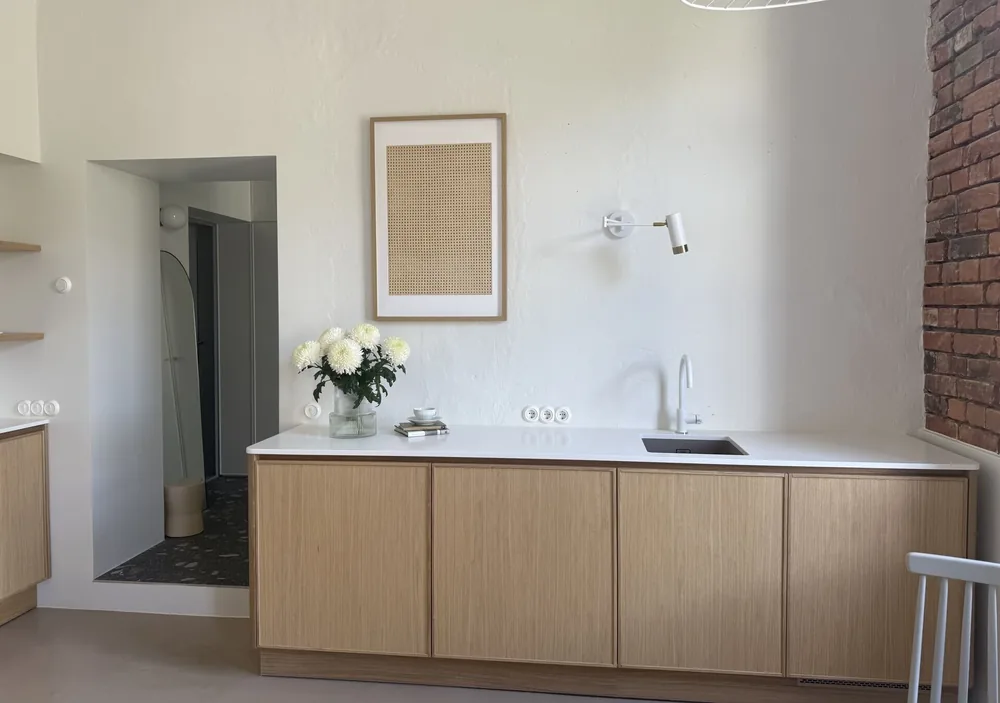
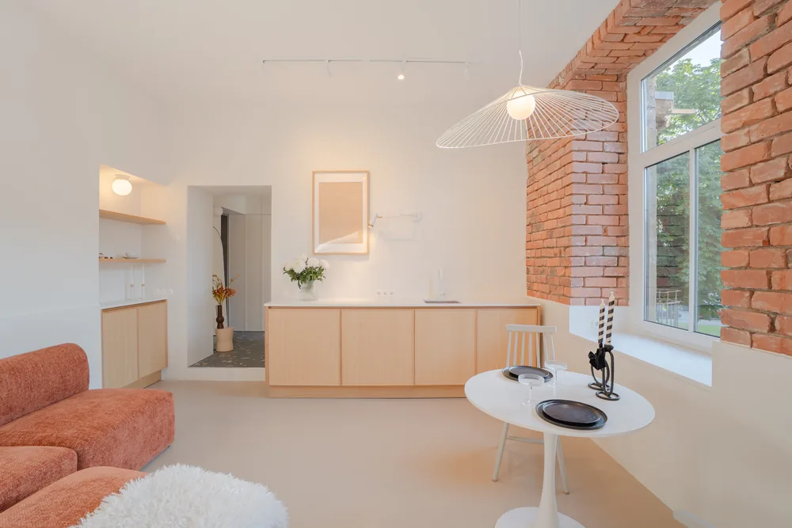

Kas professionaalne kinnisvarafoto tasub end ära?

Enne · Telefonifoto
Pärast · LINDJANARKinnisvara müües on esimene küsimus tavaliselt hind. Teine peaks olema: milline näeb kuulutus välja? Sest esimene „näitamine“ ei toimu enam objektil – see toimub KV.ee-s, City24-s ja Facebookis, kus ostja otsustab paari sekundiga, kas klikib edasi või kerib mööda.
Tunne ütleb, et hea pilt aitab. Aga numbrid ütlevad, kui palju.
Mida uuringud näitavad
Kaks enim viidatud uuringut kinnisvarafotograafia mõjust on tehtud USA turul:
- Redfini analüüs leidis, et professionaalselt pildistatud kodud hinnavahemikus $200 000 – $1 000 000 müüdi $3400 – $11 200 kõrgema lõpphinnaga võrreldes küsitud hinnaga.
- VHT Studios’i analüüs näitas, et professionaalselt pildistatud kodud müüsid 32% kiiremini – keskmiselt 89 päevaga, samas kui teised kodud seisid turul 123 päeva.
Mõlemad on USA andmed – Eesti kohta sama põhjalikku uuringut tehtud ei ole. Aga mehhanism, mida need mõõdavad, on sama igal turul: parem esmamulje toob rohkem klikke, rohkem vaatamisi ja tugevama läbirääkimispositsiooni.

Enne · Telefonifoto Pärast · LINDJANARMiks see töötab
Professionaalne foto ei ole lihtsalt „ilusam pilt“. See muudab kolme asja, mis müüki päriselt mõjutavad:
- Klikid. Portaalis konkureerib sinu kuulutus kümnete sarnastega. Esimene foto otsustab, kas ostja üldse avab kuulutuse.
- Tajutav väärtus. Õige valgus, korrektsed proportsioonid ja läbimõeldud kaadrid panevad ruumi näima sellisena, nagu ta päriselt on – mitte pimedama ja väiksemana, nagu telefonikaamera kipub näitama.
- Kiirus. Iga nädal turul tähendab müüjale lisakulu ja nõrgemat positsiooni. Kuulutus, mis töötab esimesest päevast, lühendab kogu protsessi.

Enne · Telefonifoto
Pärast · LINDJANARMilline see vahe välja näeb?
Sõnadest jääb väheks. Kõik selle artikli võrdlused on ühest väikesest Eesti korterist, mis oli algselt müügis telefonifotodega. Vasakul foto algsest kuulutusest, paremal meie foto täpselt samast ruumist.

Enne · Telefonifoto
Pärast · LINDJANAR Enne · Telefonifoto
Enne · Telefonifoto
 Pärast · LINDJANAR
Pärast · LINDJANAR
Vasakpoolsed fotod pärinevad korteri algsest kv.ee kuulutusest, parempoolsed pildistas LINDJANAR. Sellesama korteri loo leiad ka avalehelt.
Arvutus Eesti numbritega
Teeme lihtsa tehte. Tartu keskmise korteri hind on suurusjärgus 150 000€. Professionaalne pildistamine maksab meil 85–95€ – see on umbes 0,06% korteri hinnast.
Kui paremad fotod annavad kasvõi 0,5% kõrgema lõpphinna – kümme korda vähem kui Redfini uuringus mõõdetud efekt – on see 750€. Kui nad lühendavad müügiaega kuu võrra, säästad ühe kuu kommunaalid, laenuintressi ja närvid. Mõlemal juhul on foto hind tehingu kõrval ümardamisviga.
Halb stsenaarium on teistpidi kallim: pime, moonutatud või telefoniga tehtud pilt võib kuulutuse portaalis nähtamatuks teha ja objekt seisab.
 Enne · Telefonifoto
Enne · Telefonifoto
 Pärast · LINDJANAR
Pärast · LINDJANAR
Kokkuvõte
Professionaalne kinnisvarafoto ei ole ilukulu, vaid väike investeering, mille mõju – kiirem müük ja parem hind – ületab kulu suurusjärkude võrra. Just seepärast tellivad maaklerid, kes elavad tehingutest, fotod peaaegu alati professionaalilt.
Müüd korterit või maja? Hinnad algavad korteri puhul 85€ ja eramaja puhul 109€, pildid käes 48-tunniga.
Vaata hindu